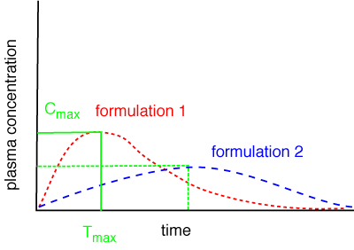
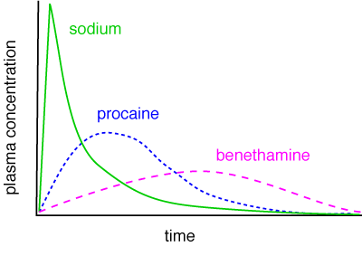

Alterations in absorption rate
A decrease in the absorption rate of a drug results in several changes to
the plasma concentration time profile. These changes are of major clinical
importance.
It is obvious from the graphs that a decrease in the absorption rate results
in a decrease and a delay to the maximum plasma concentration reached (lower
Cmax and Tmax). In some cases this may be beneficial by reducing unwanted side
effects (e.g.phenobarbitone), but in other cases it may prevent attainment
of effective plasma drug concentrations (e.g. benethamine salts of penicillin
G).
A more important effect of decreasing absorption rate is a prolonged time before
the onset of drug action. In clinically acute situations this might be quite
important and therefore in these situations a route of administration such
as the intravenous route where absorption rate changes cannot occur would be
more appropriate.
Depressed absorption rate may alter the duration of drug action by either shortening
or lengthening it, depending on the particular drug's elimination kinetics
and its minimum effective concentration.

Effects of alterations in absorption rate. The right hand graph shows the effects of different salts of penicillin. If the Cmax of benethamine penicillin does not reach the MIC of the pathogen, it will not be killed.
| 3 Pharmacokinetics index |
| |
copyright
Massey University
|